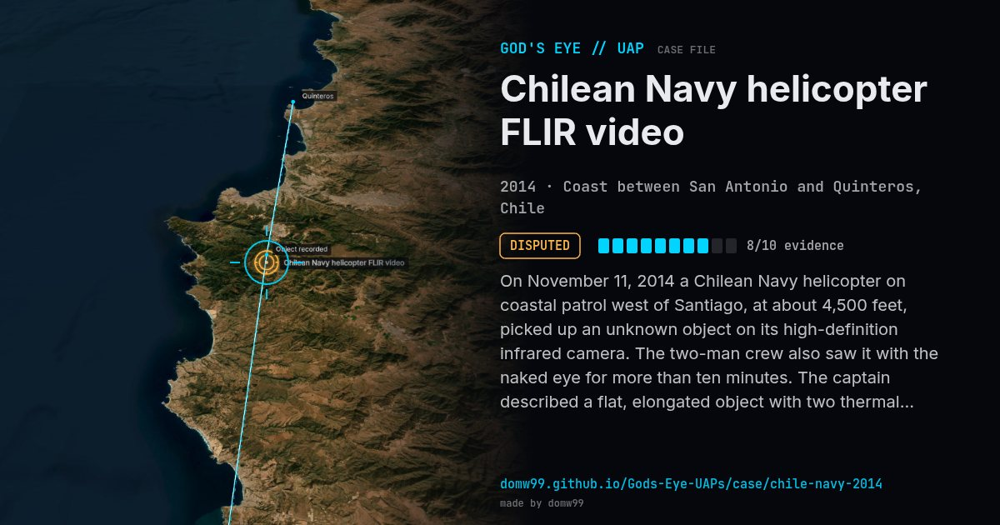

Chilean Navy helicopter FLIR video

On November 11, 2014 a Chilean Navy helicopter on coastal patrol west of Santiago, at about 4,500 feet, picked up an unknown object on its high-definition infrared camera. The two-man crew also saw it with the naked eye for more than ten minutes. The captain described a flat, elongated object with two thermal discharges that did not line up with its direction of travel, and the video shows what looks like a chemical plume. The Navy’s aerial-phenomena office CEFAA examined it and later released the footage, saying it could not be sure what it was. Sceptics later said the images match the contrail of a distant aircraft.
Explanation
Chile’s aerial-phenomena office (CEFAA) left the case open because it could not be certain of the object’s nature. Later analyses by sceptics proposed an aircraft’s contrail and exhaust seen by infrared as the likely cause.
What was seen
Shape: Flat, elongated object with two hot discharges
Witnesses: Navy helicopter crew (pilot and camera operator)
Duration: More than 10 minutes
Sources
Browse
- 2010s
- Disputed
- Military encounters
- Official government documents
- Military witnesses
- Video footage
- Infrared or other sensor data